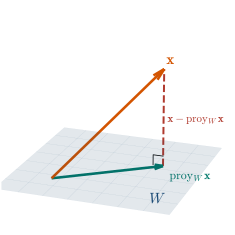
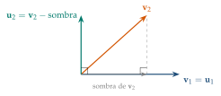
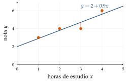

Ortogonalidad y mínimos cuadrados
- reconocer conjuntos, bases y matrices ortogonales, y aprovechar sus ventajas;
- calcular coordenadas en una base ortogonal usando solo productos punto;
- proyectar un vector sobre un subespacio y encontrar el punto más cercano;
- construir bases ortogonales con el proceso de Gram-Schmidt;
- resolver “lo mejor posible” sistemas sin solución (mínimos cuadrados) y ajustar rectas a datos.
En la vida real los datos tienen errores: las mediciones de un GPS, las encuestas o los sensores nunca son exactos, y los sistemas de ecuaciones que resultan casi nunca tienen solución. ¿Qué hacer entonces? La respuesta del álgebra lineal es elegante: buscar la solución que más se acerque, y para medir “cercanía” usamos ángulos rectos. La ortogonalidad, que en el Capítulo 3 era solo “producto punto igual a cero”, se convierte aquí en una de las herramientas más poderosas de la ciencia de datos.
9.1 Conceptos
9.1.1 Repaso: producto punto, norma y dos desigualdades
Recordemos que \(\vu\cdot\vv=\sum u_iv_i\), que \(\norma{\vv}=\sqrt{\vv\cdot\vv}\) y que \(\vu\perp\vv\) (ortogonales) si \(\vu\cdot\vv=0\). Además se cumplen dos desigualdades famosas:
La segunda dice que el camino directo nunca es más largo que el camino con un desvío. El producto punto es un caso de lo que se llama producto interno; en espacios de funciones también se definen productos internos, por ejemplo con integrales, y todo lo de este capítulo sigue valiendo.
9.1.2 Conjuntos y bases ortogonales
Un conjunto de vectores \(\{\vu_1,\dots,\vu_k\}\) es ortogonal si cada par de vectores distintos es ortogonal: \(\vu_i\cdot\vu_j=0\) para \(i\neq j\). Es ortonormal si además cada vector tiene norma 1.
- Un conjunto ortogonal de vectores no nulos es linealmente independiente.
Si \(\{\vu_1,\dots,\vu_n\}\) es una base ortogonal, las coordenadas de cualquier \(\vx\) se calculan sin resolver sistemas:
\[\vx=c_1\vu_1+\cdots+c_n\vu_n\qquad\text{con}\qquad c_i=\frac{\vx\cdot\vu_i}{\vu_i\cdot\vu_i}.\]Si la base es ortonormal, simplemente \(c_i=\vx\cdot\vu_i\).
La razón de la fórmula: al multiplicar \(\vx=c_1\vu_1+\cdots+c_n\vu_n\) por \(\vu_i\), todos los productos \(\vu_j\cdot\vu_i\) con \(j\neq i\) se anulan y queda \(\vx\cdot\vu_i=c_i\,\vu_i\cdot\vu_i\).
9.1.3 Matrices ortogonales
Una matriz cuadrada \(Q\) es ortogonal si sus columnas forman un conjunto ortonormal. Equivalentemente,
¡Invertir una matriz ortogonal es gratis: basta transponerla! Además \(\norma{Q\vx}=\norma{\vx}\) y \((Q\vx)\cdot(Q\vy)=\vx\cdot\vy\): las matrices ortogonales conservan longitudes y ángulos. Las rotaciones y las reflexiones del Capítulo 8 son ortogonales.
9.1.4 Complemento ortogonal
Si \(W\) es un subespacio de \(\R^n\), su complemento ortogonal \(W^\perp\) es el conjunto de vectores ortogonales a todos los vectores de \(W\). Es un subespacio y \(\dimension W+\dimension W^\perp=n\).
Por ejemplo, en \(\R^3\) el complemento de una recta por el origen es el plano perpendicular a ella, y viceversa. Una conexión importante: el espacio nulo de \(A\) es el complemento ortogonal de su espacio fila, porque \(A\vx=\cero\) dice exactamente que \(\vx\) es ortogonal a cada fila de \(A\).
9.1.5 Proyección sobre un subespacio y mejor aproximación
Si \(\{\vu_1,\dots,\vu_k\}\) es una base ortogonal de \(W\), la proyección de \(\vx\) sobre \(W\) es
El vector \(\vx-\proy_W\vx\) es ortogonal a \(W\).

De todos los vectores de \(W\), el más cercano a \(\vx\) es \(\proy_W\vx\):
para todo \(\vw\in W\). La distancia de \(\vx\) a \(W\) es \(\norma{\vx-\proy_W\vx}\).
9.1.6 El proceso de Gram-Schmidt
¿Y si la base de \(W\) no es ortogonal? Se puede “enderezar”: a cada vector se le resta su sombra sobre los anteriores.
Dada una base \(\{\vv_1,\dots,\vv_k\}\) de \(W\), los vectores
forman una base ortogonal de \(W\). Dividiendo cada uno por su norma se obtiene una base ortonormal.

9.1.7 Mínimos cuadrados
Si el sistema \(A\vx=\vb\) no tiene solución, es porque \(\vb\) no está en el espacio columna de \(A\). Lo mejor que podemos hacer es reemplazar \(\vb\) por el vector más cercano de \(\Col(A)\), que es su proyección: buscamos \(\hat{\vx}\) con \(A\hat{\vx}=\proy_{\Col A}\vb\).
Una solución de mínimos cuadrados de \(A\vx=\vb\) es un \(\hat{\vx}\) que hace lo más pequeño posible el error \(\norma{\vb-A\vx}\). Se obtiene resolviendo las ecuaciones normales
Si las columnas de \(A\) son independientes, la solución es única: \(\hat{\vx}=(A\T A)\inv A\T\vb\).
El nombre viene de que se minimiza la suma de los cuadrados de los errores, \(\norma{\vb-A\vx}^2=\sum(b_i-(A\vx)_i)^2\).
La recta de regresión
Dados puntos \((x_1,y_1),\dots,(x_m,y_m)\), buscamos la recta \(y=a+bx\) que mejor los aproxima. Queremos que \(a+bx_i\approx y_i\) para todo \(i\):

Si \(A\) es de \(5\times2\), ¿de qué tamaño es \(A\T A\)? ¿Y \(A\T\vb\)?
Ver respuesta
9.2 Cómo utilizar los conceptos
- Consigue una base de \(W\). Si no es ortogonal, ortogonalízala con Gram-Schmidt.
- Para cada \(\vu_i\), calcula el coeficiente \(\dfrac{\vx\cdot\vu_i}{\vu_i\cdot\vu_i}\).
- Suma: \(\proy_W\vx=\sum\text{coef}_i\,\vu_i\).
- Comprueba que \(\vx-\proy_W\vx\) es ortogonal a cada \(\vu_i\). Su norma es la distancia de \(\vx\) a \(W\).
- \(\vu_1=\vv_1\).
- Para cada vector siguiente, réstale su proyección sobre cada \(\vu\) ya obtenido.
- Truco: puedes multiplicar cualquier \(\vu_i\) por un número para eliminar fracciones; sigue siendo ortogonal a los demás.
- Comprueba que todos los productos punto entre los \(\vu_i\) son cero. Normaliza si te piden una base ortonormal.
- Arma la tabla con columnas \(x_i\), \(y_i\), \(x_i^2\), \(x_iy_i\) y súmalas.
- Escribe las ecuaciones normales: \(\begin{pmatrix}m&\sum x\\\sum x&\sum x^2\end{pmatrix}\begin{pmatrix}a\\b\end{pmatrix}=\begin{pmatrix}\sum y\\\sum xy\end{pmatrix}\).
- Resuelve el sistema de \(2\times2\) (por ejemplo, con la inversa o con Cramer).
- Interpreta: \(b\) es cuánto cambia \(y\) en promedio por cada unidad de \(x\).
- Usar la fórmula de proyección con una base que no es ortogonal: el resultado es incorrecto.
- Olvidar la columna de unos en la matriz de la regresión (sin ella, la recta queda obligada a pasar por el origen).
- Resolver \(A\vx=\vb\) “a la fuerza” eliminando ecuaciones: se pierde información. Hay que usar las ecuaciones normales.
9.3 Ejemplos resueltos
Comprueba que \(\vu_1=(1,1,0)\), \(\vu_2=(1,-1,1)\), \(\vu_3=(-1,1,2)\) son ortogonales y escribe \(\vx=(3,1,4)\) en esa base.
Solución. \(\vu_1\cdot\vu_2=1-1+0=0\), \(\vu_1\cdot\vu_3=-1+1+0=0\), \(\vu_2\cdot\vu_3=-1-1+2=0\). ✓ Coeficientes:
Así, \(\vx=2\vu_1+2\vu_2+\vu_3\). (Comprueba: \((2+2-1,\ 2-2+1,\ 0+2+2)=(3,1,4)\).)
Proyecta \(\vx=(3,1,4)\) sobre el plano \(W=\gen\{\vu_1,\vu_2\}\) del ejemplo anterior y calcula la distancia de \(\vx\) a \(W\).
Solución. Usando los coeficientes ya calculados: \(\proy_W\vx=2\vu_1+2\vu_2=(4,0,2)\). El error es \(\vx-\proy_W\vx=(-1,1,2)\), que es ortogonal a \(\vu_1\) y \(\vu_2\). La distancia es \(\norma{(-1,1,2)}=\sqrt6\approx2.45\).
Verifica que \(Q=\frac13\begin{pmatrix}1&2&2\\2&1&-2\\2&-2&1\end{pmatrix}\) es ortogonal y resuelve \(Q\vx=(3,3,3)\).
Solución. Cada columna tiene norma \(\frac13\sqrt{1+4+4}=1\), y por ejemplo columna 1 \(\cdot\) columna 2 \(=\frac19(2+2-4)=0\). Se verifica \(Q\T Q=I\). Entonces \(\vx=Q\T(3,3,3)=\frac13(3+6+6,\ 6+3-6,\ 6-6+3)=(5,1,1)\), ¡sin calcular ninguna inversa!
Ortogonaliza \(\vv_1=(1,1,0)\), \(\vv_2=(1,0,1)\), \(\vv_3=(0,1,1)\).
Solución.
\(\vu_1=(1,1,0)\). \(\vu_2=(1,0,1)-\frac{1}{2}(1,1,0)=(\frac12,-\frac12,1)\); multiplicamos por 2: \(\vu_2=(1,-1,2)\).
\(\vu_3=(0,1,1)-\frac{1}{2}(1,1,0)-\frac{1}{6}(1,-1,2)=(-\tfrac23,\tfrac23,\tfrac23)\); multiplicando por \(\tfrac32\): \(\vu_3=(-1,1,1)\).
Comprobación: \(\vu_1\cdot\vu_2=0\), \(\vu_1\cdot\vu_3=0\), \(\vu_2\cdot\vu_3=-1-1+2=0\). ✓
Las horas de estudio y las notas (escala 1 a 7) de cuatro estudiantes son \((1,3)\), \((2,4)\), \((3,4)\), \((4,6)\). Encuentra la recta de mínimos cuadrados.
Solución. \(m=4\), \(\sum x=10\), \(\sum x^2=30\), \(\sum y=17\), \(\sum xy=3+8+12+24=47\). Ecuaciones normales:
La recta es \(y=2+0.9x\) (Figura 9.3): cada hora extra de estudio se asocia, en promedio, a 0.9 puntos más de nota.
Encuentra la solución de mínimos cuadrados de \(\sistema{x+y=1\\x+2y=2\\x+3y=2}\).
Solución. \(A\T A=\begin{pmatrix}3&6\\6&14\end{pmatrix}\) y \(A\T\vb=\begin{pmatrix}5\\11\end{pmatrix}\). Resolviendo, \(\hat{\vx}=(\tfrac23,\ \tfrac12)\). Ningún par \((x,y)\) cumple las tres ecuaciones, pero este es el que se equivoca menos.
9.4 Aplicaciones en la vida real
Una heladería registra la temperatura máxima (\(x\), en \(^\circ\)C) y los helados vendidos (\(y\)) en cuatro días: \((18,100)\), \((22,130)\), \((26,150)\), \((30,180)\). Las ecuaciones normales son
Cada grado adicional se asocia a 6.5 helados más. Para un día de \(34^\circ\)C se esperan unos \(-16+6.5\cdot34=205\) helados. La regresión lineal, que es mínimos cuadrados, es la herramienta más usada de la estadística y el punto de partida del aprendizaje automático.
Un receptor GPS combina varias mediciones de su posición \((x,y)\), cada una con un pequeño error. Supongamos que obtiene \(x=2.1\), \(y=1.9\) y \(x+y=4.3\) (en km). Las tres no son compatibles (pues \(2.1+1.9=4.0\)). Con \(A=\begin{pmatrix}1&0\\0&1\\1&1\end{pmatrix}\):
El receptor reparte el error entre todas las mediciones en lugar de confiar ciegamente en una. Los GPS reales usan más satélites que incógnitas precisamente para poder promediar errores de esta forma.
Un sensor mide la altura (en metros) de un proyectil de juguete en \(t=0,1,2,3\) segundos: \(1\), \(6\), \(8\), \(7\). Buscamos \(h(t)=a+bt+ct^2\). Ahora \(A\) tiene columnas \(1\), \(t\), \(t^2\):
Así se ajustan curvas de crecimiento, de demanda o de contagio: el modelo no tiene que ser una recta, basta con que sea lineal en los coeficientes.
Como \(Q\inv=Q\T\), los programas de gráficos y de robótica deshacen rotaciones sin calcular inversas. Y los formatos de compresión de imágenes y audio (como JPEG y MP3) escriben cada bloque de datos en una base ortonormal de “ondas”: las coordenadas se obtienen con simples productos punto, se descartan las pequeñas y se guarda el resto.
9.5 Ejercicios de práctica
- 9.1Comprueba que \(\{(1,2,-1),\ (1,0,1),\ (1,-1,-1)\}\) es un conjunto ortogonal y conviértelo en uno ortonormal.Ver solución
- 9.2Verifica que \(\{(\tfrac35,\tfrac45),\ (-\tfrac45,\tfrac35)\}\) es una base ortonormal de \(\R^2\).Ver solución
- 9.3Usando la base del Ejercicio 9.1, escribe \(\vx=(4,1,0)\) como combinación lineal sin resolver sistemas.Ver solución
- 9.4¿Son ortogonales? a) \(\begin{pmatrix}0&1\\1&0\end{pmatrix}\) b) \(\begin{pmatrix}1&1\\-1&1\end{pmatrix}\) c) \(\begin{pmatrix}\cos\theta&-\sin\theta\\\sin\theta&\cos\theta\end{pmatrix}\)Ver solución
- 9.5Proyecta \((2,3)\) sobre la recta generada por \((1,1)\) y calcula la distancia del punto a la recta.Ver solución
- 9.6Describe el complemento ortogonal de \(W=\gen\{(1,2,3)\}\) en \(\R^3\).Ver solución
- 9.7Los vectores \(\vu_1=(1,0,1)\) y \(\vu_2=(1,1,-1)\) son ortogonales. Proyecta \(\vx=(3,4,1)\) sobre \(W=\gen\{\vu_1,\vu_2\}\) y calcula la distancia de \(\vx\) a \(W\).Ver solución
- 9.8Aplica Gram-Schmidt a: a) \((1,1)\), \((2,0)\) b) \((1,0,1)\), \((1,1,0)\).Ver solución
- 9.9Aplica Gram-Schmidt a \((1,1,1)\), \((0,1,1)\), \((0,0,1)\) y obtén una base ortonormal de \(\R^3\).Ver solución
- 9.10Encuentra la solución de mínimos cuadrados de \(\sistema{x=6\\x+y=0\\x+2y=0}\) (incógnitas \(x\), \(y\)).Ver solución
- 9.11Encuentra la recta de regresión para los puntos \((0,1)\), \((1,3)\), \((2,4)\), \((3,4)\).Ver solución
- 9.12Calcula la distancia del punto \((2,1,3)\) al plano \(2x-y+2z=0\). (Sugerencia: proyecta sobre el vector normal.)Ver solución
- 9.13Con la matriz \(Q\) del Ejemplo de matriz ortogonal, resuelve \(Q\vx=(3,0,3)\) usando \(Q\T\).Ver solución
- 9.14Para \(A=\begin{pmatrix}1&2&-1\\0&1&1\end{pmatrix}\), encuentra \(\nul(A)\) y comprueba que es ortogonal a las filas de \(A\).Ver solución
- 9.15Con la recta de la Aplicación 9.1, ¿cuántos helados se esperan a \(24^\circ\)C? ¿A qué temperatura se esperarían 200 helados?Ver solución
- 9.16Ajusta una parábola \(y=a+bt+ct^2\) por mínimos cuadrados a los puntos \((-1,3)\), \((0,0)\), \((1,0)\), \((2,3)\). ¿Cuál es el error total?Ver solución
- 9.17Un receptor obtiene las mediciones \(x=3\), \(y=2\) y \(x-y=1.3\). Encuentra la posición de mínimos cuadrados.Ver solución
- 9.18En la Aplicación 9.3, ¿qué altura predice el modelo para \(t=4\)? ¿En qué instante alcanza su altura máxima?Ver solución
- 9.19Comprueba la desigualdad de Cauchy-Schwarz para \(\vu=(1,2,3)\) y \(\vv=(4,-1,2)\).Ver solución
- 9.20Desafío. Demuestra que un conjunto ortogonal de vectores no nulos es linealmente independiente. (Sugerencia: multiplica \(c_1\vu_1+\cdots+c_k\vu_k=\cero\) por \(\vu_i\).)Ver solución
9.6 Solucionario
9.1 Solución del ejercicio 9.1
Productos: \(1+0-1=0\), \(1-2+1=0\), \(1+0-1=0\). Normas \(\sqrt6\), \(\sqrt2\), \(\sqrt3\): base ortonormal \(\{\frac{1}{\sqrt6}(1,2,-1),\ \frac1{\sqrt2}(1,0,1),\ \frac1{\sqrt3}(1,-1,-1)\}\).↑ volver al enunciado9.2 Solución del ejercicio 9.2
\(\tfrac{9}{25}+\tfrac{16}{25}=1\) para ambos y \(-\tfrac{12}{25}+\tfrac{12}{25}=0\). ✓↑ volver al enunciado9.3 Solución del ejercicio 9.3
\(c_1=\frac{6}{6}=1\), \(c_2=\frac{4}{2}=2\), \(c_3=\frac{3}{3}=1\): \((4,1,0)=(1,2,-1)+2(1,0,1)+(1,-1,-1)\).↑ volver al enunciado9.4 Solución del ejercicio 9.4
a) Sí. b) No: sus columnas tienen norma \(\sqrt2\) (sí lo es \(\frac{1}{\sqrt2}\) veces esa matriz). c) Sí.↑ volver al enunciado9.5 Solución del ejercicio 9.5
\(\frac{5}{2}(1,1)=(2.5,\ 2.5)\); distancia \(\norma{(-0.5,\ 0.5)}=\sqrt{0.5}\approx0.71\).↑ volver al enunciado9.6 Solución del ejercicio 9.6
El plano \(x+2y+3z=0\).↑ volver al enunciado9.7 Solución del ejercicio 9.7
\(\frac{4}{2}\vu_1+\frac{6}{3}\vu_2=(2,0,2)+(2,2,-2)=(4,2,0)\). Error \((-1,2,1)\), distancia \(\sqrt6\).↑ volver al enunciado9.8 Solución del ejercicio 9.8
a) \(\vu_1=(1,1)\), \(\vu_2=(2,0)-1\cdot(1,1)=(1,-1)\). b) \(\vu_1=(1,0,1)\), \(\vu_2=(1,1,0)-\frac12(1,0,1)=(\frac12,1,-\frac12)\), o bien \((1,2,-1)\).↑ volver al enunciado9.9 Solución del ejercicio 9.9
\(\vu_1=(1,1,1)\), \(\vu_2=(-2,1,1)\) (tras escalar), \(\vu_3=(0,-1,1)\). Ortonormal: \(\frac1{\sqrt3}(1,1,1)\), \(\frac1{\sqrt6}(-2,1,1)\), \(\frac1{\sqrt2}(0,-1,1)\).↑ volver al enunciado9.10 Solución del ejercicio 9.10
\(A=\begin{pmatrix}1&0\\1&1\\1&2\end{pmatrix}\), \(A\T A=\begin{pmatrix}3&3\\3&5\end{pmatrix}\), \(A\T\vb=(6,0)\). Solución \(\hat{\vx}=(5,-3)\).↑ volver al enunciado9.11 Solución del ejercicio 9.11
\(\begin{pmatrix}4&6\\6&14\end{pmatrix}\begin{pmatrix}a\\b\end{pmatrix}=\begin{pmatrix}12\\23\end{pmatrix}\): \(a=1.5\), \(b=1\). Recta \(y=1.5+x\).↑ volver al enunciado9.12 Solución del ejercicio 9.12
\(\vect n=(2,-1,2)\), \(\norma{\vect n}=3\); distancia \(=\frac{\abs{(2,1,3)\cdot\vect n}}{\norma{\vect n}}=\frac{4-1+6}{3}=3\).↑ volver al enunciado9.13 Solución del ejercicio 9.13
\(\vx=Q\T(3,0,3)=\frac13(3+0+6,\ 6+0-6,\ 6-0+3)=(3,0,3)\).↑ volver al enunciado9.14 Solución del ejercicio 9.14
\(\nul(A)=\gen\{(3,-1,1)\}\); \((3,-1,1)\cdot(1,2,-1)=0\) y \((3,-1,1)\cdot(0,1,1)=0\). ✓↑ volver al enunciado9.15 Solución del ejercicio 9.15
\(-16+6.5\cdot24=140\) helados. Para 200: \(6.5x=216\), \(x\approx33.2^\circ\)C.↑ volver al enunciado9.16 Solución del ejercicio 9.16
Con \(A\) de columnas \(1,t,t^2\): \(A\T A\hat{\vx}=A\T\vb=(6,3,15)\) da \(y=-1.5t+1.5t^2\), que pasa exactamente por los cuatro puntos: el error es \(0\).↑ volver al enunciado9.17 Solución del ejercicio 9.17
\(A\T A=\begin{pmatrix}2&-1\\-1&2\end{pmatrix}\) y \(A\T\vb=(4.3,\ 0.7)\), de donde \(\hat{\vx}=(3.1,\ 1.9)\).↑ volver al enunciado9.18 Solución del ejercicio 9.18
\(h(4)=1+26-24=3\) m. Máximo donde \(h'(t)=6.5-3t=0\): \(t\approx2.17\) s (altura \(\approx8.04\) m).↑ volver al enunciado9.19 Solución del ejercicio 9.19
\(\vu\cdot\vv=4-2+6=8\) y \(\norma{\vu}\norma{\vv}=\sqrt{14}\sqrt{21}\approx17.1\). Efectivamente \(8\le17.1\).↑ volver al enunciado9.20 Solución del ejercicio 9.20
Multiplicando por \(\vu_i\): \(c_1\vu_1\cdot\vu_i+\cdots+c_k\vu_k\cdot\vu_i=0\). Todos los productos con \(j\neq i\) son \(0\), queda \(c_i\norma{\vu_i}^2=0\), y como \(\vu_i\neq\cero\), \(c_i=0\). Esto vale para cada \(i\).↑ volver al enunciado
¿Terminaste de estudiar este capítulo?